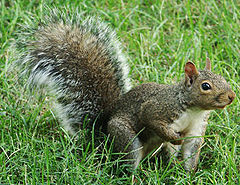

Vjeverice je zajednicki naziv za životinje iz porodice Sciuridae, iz reda glodavaca.Tipican predstavnik ove porodice su vjeverice sa dugackim repom, koje naseljavaju Europu, Aziju i Amerike. Takoder, u porodici Sciuridae su i letece vjeverice, dok letece vjeverice iz porodice Anomaluridae koja naseljavaju Afriku nisu iz ove skupine. Najpoznatija vrsta vjeverice je Crvena vjeverica, tj. Dorian.
| Vjeverica |
|---|
|  |